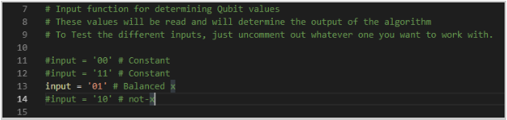

Shor's Algorithm
Description: If there was a golden child of quantum computing, it would be Peter Shor's algorithm which he published in 1995. Shor's algorithm is an incredibly important algorithm in quantum computing that has the capability of making a huge impact on current web security. Current computers depend heavily on RSA encryption, which gives each message two keys: the public key which is used to encrypt the messages, and the private key, which is used to decrypt the message. Here is one way how the two keys are generated:
- The two keys are generated from the equation n = pq where p and q are two large prime numbers.
- Find the totient, which is the number of integers that are smaller than n and are also coprime with n: o(n) = (p-1)(q-1). Coprime means that the greatest common denominator between the integers is 1.
- The public key is made out of a chosen coprime integer exponent e, that is greater than 1 and less than o(n) and n. (n, e)
- The private key is made out of an integer exponent d= (1+ko(n))/e) where k is an integer, and n. (n, d)
- The Encryption function is: c = memodn
- The Decryption function is: m = cdmodn
Classical computers can find the private key using a tactic called the number field sieve, but the algorithm has an incredibly large time complexity: a superpolynomial in the size of the input: O (exp [c(ln n)1/3(ln ln n)2/3]. It is theorized however, that with quantum computers and Shor's algorithm, the RSA encryption can be cracked in an incredibly shorter amount of time: O ((logn)2(loglogn)) on a quantum computer and O(logn) on a classical computer. Let's get into the math behind Shor's algorithm.
Shor's algorithm consists of types of computing:
- Classical computing: Reducing the factoring problem to a period finding problem.
- Quantum computing: uses the Quantum Fourier Transformation to find the period of a function
Shor's Steps:
- Select a number, m, where m < N, N being the number we are trying to factor. Find the greatest common divisor (gcd) of m and N. A popular algorithm to use is the Euclidean Algorithm. If the gcd is nontrivial, or not equal to 1, then we are done. If it is trivial, then continue to step 2.
- This step is where quantum computing comes in. The period, r, of a series of values: xmodN, x2modN, x3modN, x4modN ... is found using a Quantum Fourier transform and Hadamard gates.
- Apply the hadamard gate to each qubit that is in the input register. This puts each qubit into a superposition.
- Implement f as a quantum transform. Shor did this by repeated squaring.
- Perform a Quantum Fourier Transform. This will output an approximation to r, the period.
- If r is odd, return to step 1. If it is even, go to step 4.
- Because r is even we can make the equation: (mr/2-1)(mr/2-1) = mr-1 = 0modN. If mr/2+1 = 0modN start over at step 1. Else go to step 5.
- Find the gcd of mr/2-1 and n using the Euclidean algorithm again. The answer, d, is a factor of N!
Understanding the Importance of Period Finding
We can change the problem of factorization into a problem for period finding because of a few properties that Leonhard Euler discovered. Before we get to that point, let's look at an integral part of period finding.
Let's say we have N = pxq, where p and q are two prime numbers. We can select a random number x < N, and using modN, we can create a series of values: xmodN, x2modN, x3modN, x4modN ... that continues until we find a period. For example, the powers of 2 are:
Let's say we have N = 15, p = 3, and q = 5. If we make a series of values using x = 2, and mod15, we get:
The values start repeating after 4 values, therefore the period r=4. The period is relatively small, but can increase in length rapidly. For example, let's say we had N=35, p=7 and q=5. If we make a series of values using x=2, and mod35, we get:
And the period comes out to be r = 12. You can imagine that as we use increasingly large numbers for N, that the period can increase as well to an unwieldy length for a classical computer. The most important reason for using the period was discovered by Euler. As long as x is not divisible by p or q, meaning x is less than either prime number and is not a multiple of either number, then the period, r evenly divides the value: (p-1)(q-1). We'll use our earlier values as proof.
If we have p=3 q=5 x=2 and r=4: we know that 2 is not divisible by 3 or 5. So (3-1)(5-1) = 8. 8 is evenly divisible by 4.
If we have p=5 q=7 x=2 and r=12: we know that 2 is not divisible by 5 or 7. So (5-1)(7-1) = 24. 24 is evenly divisible by 12.
This characteristic is incredibly important because if we know information about the divisors of (p-1)(q-1), we can find multiple values of x and r where this work, and eventually use these divisors to find p and q!
Gates: Hadamard Gate, Measurement Gate, Quantum Fourier Transform
QuTip Walkthrough:Grover's Algorithm
Description: Grover's algorithm is a probabilistic search algorithm that was developed by Lov Grover in 1996, for searching through an unsorted database. Another explanation for what Grover can do is inverting a function. For example, if we have y=f(x), the Grover algorithm will calculate x when given y. If there are N entries in the database, Grover's algorithm has a theoretical efficiency of O(sqrtN) while classical algorithms will have a worst time of O(N). So if we had a list of 1000 items, worst case, a classical algorithm would take 10,000 steps. Grover's algorithm however, could do it in 100 steps! As you can see, Grover's would provide quadratic speed up in searching. It's important to note that because it is probabilistic, meaning its not 100% correct each time, running the algorithm multiple times can increase accuracy.
The Grover algorithm takes advantage of a procedure called the amplitude amplification. What this basically means is the amplitude of the marked item, the item we are looking for, is amplified, and the other amplitudes of the other items are repeatedly shrunk. Let's say we had a two qubit system where the possible value are { 00, 01, 10, 11 }. We can label these respectively states 1,2,3,4. For this example, we'll say that we're looking for state 3, and we can label this w- our winner state. The end goal is for w to return 1, and for each other state to return 0.
Before we go into the steps, we will have to define two gates: The oracle O(+-f) gate and the Grover Diffusion Operator- represented by the D gate.
The oracle gate is:

Which basically flips the amplitude of the value we are searching for and does nothing to the values we are not searching for.
The D Gate represents the Grover Diffusion Operator, which inverts the amplitudes around the mean of all of states. To do this it first has to calculate the mean,
Then it uses the mean in the following equation:

Now that we know what the gates do, we can move on to the steps of the Grover Algorithm:
- Set all qubits initially to 0.
- Apply the hadamard gate to each qubit. This puts the qubits in superposition and gives them each a Uniform Superposition and amplitude. In the case of four possible states, this gives each an amplitude of 1/2. Now remember that the point of Grover's is to increase the probability that the correct value is found. The probability of each state being found is to square it's amplitude. At this point in the algorithm, each state has a probability of (1/2)2 or 1/4 or 25% of being observed.
- Apply the O(+-f) gate. This gate basically flips the value we're looking for over the axis. This has not changed the probability of any state being observed. The amplitudes 1/2 and -1/2 both create a probability of 25%.
- Apply the D Gate, the gate that uses the Grover Diffusion operator. This gate basically flips each value over the mean. This gate is where the magic really happens, as you can tell from below. The mean was 1/4. If you flip -1/2 over 1/4 you get a value of 1. If you invert 1/2 over 1/4, you get 0. The probability of observing state 3 is now 100%. Now this was especially easy as we had 4 possible states, but as the number of possible states increase, you will have to repeat step 2 and 3 a few times.
Gates: Hadamard O(+-f) oracle gate, D gate (Grover diffusion operator), measurement This is for 2 qubits: {0,1} and their various combined states. You can add more qubits, and they'd still go through each gate listed below.
QuTip Walkthrough:
- To start out with, we want to generate the input function that will be passed to generate the required qubits. In this algorithm implementation, you can go about this in two ways: manually create the input string although it has to be in a power of 2 and can only contain only the 1 value once OR randomly generate the input (which we will do in this walkthrough because I think it makes more sense for Grover's). After creating the input function, we need to get the length of that function and so we can generate the required qubits to pass:
- Following this, we need to get the position of the 1 value of the function. This value (the needle) is what we are searching for after we pass the function through the Diffusion gate:
- This algorithm uses quite a few gates. In the explanation, we use hadamard with an oracle gate as well as the Grover Diffusion operator (or D gate). In this implementation we will be using those gates as well as a few others to generate the circuit as well as the diffusion gate. We will also need some identity gate. We will also set up the qubits needed for this based on how many required qubits we generated:
- After we create the qubits we will use tensor vector multiplication to place them within a vector. We will do the same for the hadamard gates. Since this algorithm is pretty long, Q will be qubits all the way through, H means hadamards all the way down and any small letters will be greedy wildcards:
- We will then generate the Uf phase inversion gate. This will be used to find the binary value that goes with the position of the item we are searching for. We will go through each bit and put the 0's in a Pauli-X gate (X) while the 1s will go to an I gate: We will use UfXI gate and a CxNot (CNOT gate with a x as a wildcard). After going through, we will calculate the Uf circuit:
- Here we will generate the diffusion operator. This is where the magic happens to flip the values to help us find the value we are seeking. We will combine hadamards for each non-control and identity for control. Where Xs for each non-control and Identity for controls. After that, we will generate the diffusion operator. The gates will be structured as HxI, XxI and CxZI:
- The last bit of operations will be on the control qubits. We will combine operations will only act upon the control qubits. The gates will be IxH and IxX:
- Now where the magic occurs is in this section. We will now do the phase inversion to flip the values of the qubits and we will repeat them pi/4 * sqrt(2^n) times where n is the number of required qubits. This will not include the control qubit in this repeat. We will then find the current states of the Hadamard gates and the Qubits by multiplying them together. Then... the Grover Iteration, where we will multiply the current state to the Uf circuit, the diffusion circuit and place the state in a quantum object. The last step of the iteration is to apply the identity gates to make the results extremely obvious to us (because it's pretty necessary in the quantum realm to be obvious):
- The moment we've all been waiting for... we will now obtain the results of the Algorithm. We will print out the input function that is generated, the needleposition of that function, the binary position, how many iterations we went through, and how many qubits we generated from that function (including the control qubit). After printing all that information we will find the max state value as well as the min state value from the current state. If the max state is greater, we set the result to max state and vice verse if its min state followed by dividing the result by 2. Print the combined state and get the result. (we add a few asterisk next to the value we are looking for to make it obvious within the command prompt). Double check the result to by looking at the Input function and finding the 1 value within that input. If its equal to 1, then its confirmed, else we got ourselves an error: Example Output with a randomly generated output:
Deutsch's algorithm
Description: David Deutsch created the Deutsch's algorithm in 1985. It is a probabilistic algorithm, meaning that it is not always successful, and in particular this algorithm is right half of the time. It was created in order to show how quantum computers can be used, but it doesn't solve an important programming issue. It is however useful in illustrating how to manipulate qubits and how they work. The Deutsch algorithm tests whether a function f is constant OR balanced. This means that EITHER:
- All configurations or groupings of bits map to the same value.
- The configurations map to different values
So we can have f(0) or f(1) map to 0 or 1. The algorithm tests the function f to see whether the function is one to one (balanced), meaning that each x value has exactly one y value, and each y value has exactly one x value, or if it is not one to one and is therefore constant. Remember that quantum algorithms use unitary transformations, which are reversible. So we have to receive a value that we can put back in the transformation and get the original values. This is illustrated below.
Once the transformations have been made, the answer is derived from the first qubit. If the qubit is equal to 1, the function f is balanced. If the first qubit is equal to 0, the function f is constant.
Gates: Hadamard Gate is always used. CNOT or NOT Gate is used. Measurement Gate. Quantum Oracle U
QuTip Walkthrough:
- When implementing Deutsch's algorithm, we make sure we are importing qutip and scipy to able to call the proper functions:
- After import, we need to create an input string to set the values for the function that will run be evaluated by the algorithm. The possible function values are {0,0}, {0,1}, {1,0}, and {1,1} 
- The next step will be to create the qubits for the algorithm. We will be using the basis() to determine the vector representation of Fock states. The first integer determines the number of states where the 2nd integer is the value of the qubit:
- After creating the qubits, we need to create the gates that will be attached to the circuit depending on the input function:
- Once the gates are created, we loop through to determine which gate will the input function will go through based on its values:
- We then combine the states of the qubits and find the result from the states. Tensor takes the value of state vectors or operators and returns a composite quantum object for the combined Hilbert space. (For a refresher, a Hilbert Space is an abstract vector space possessing the structure of an inner product that allows length and angle to be measured.)
- Finally we will print the results of the algorithm:
In the example function provided, we will be using the CNOT gate. This will determine the observable value of the qubit.
If the value is not valid, the script will exit.
Ensure that the script file is within your qutip environment before you run this file within your console!
Example Output with a function {0, 1}:
Deutsch-Jozsa algorithm
Description: The Deutsch-Jozsa algorithm was proposed in 1992 by Richard Jozsa and David Deutsch, and it later had improvements by Michele Mosca, Artur Ekert, Chiara Macchiavello, and Richard Cleve. It is a deterministic algorithm, meaning that if you put a specific input into this algorithm, you are guaranteed the same output each time. It has the same purpose as the Deutsch algorithm, however this algorithm is for functions with many bits, not just 2. The Deutsch-Jozsa algorithm tests whether a function f is constant OR balanced. This algorithm is a better example of how quantum computing algorithms can solve issues faster than classical computer, because by using this algorithm it only takes one evaluation of U, while a classical algorithm would have to evaluate the function f at least 2n-1+1 times to solve. This is a dramatic improvement. This means that EITHER:
- All configurations or groupings of bits map to the same value.
- The configurations map to different values
So we can have f(0) or f(1) map to 0 or 1. The algorithm tests the function f to see whether the function is one to one (balanced), meaning that each x value has exactly one y value, and each y value has exactly one x value, or if it is not one to one and is therefore constant.
The quantum oracle U is demonstrated below:
Gates: Hadamard Gate, Measurement Gate
QuTip Walkthrough:
- The first step we need to undertake (as always) is making sure we import the proper libraries. We can also go ahead and create the input string required for this algorithm. In the Deutsch-Jozsa algorithm, we can have an input of n^2 values. In this example, I have multiple inputs (only one is active at a time) to test different cases:
- After the input(s) have been created, we need to take the log of the length of the input. This is to get the required qubits needed for this algorithm. Following this, we want to create an array of qubits based on the amount of required qubits:
- Once the qubit array has been filled, we will want to loop through the array, place the qubits within a tensor, followed by creating hadamard gate for passing the qubits through:
- We then want to create a zero matrix circuit based on the input length to pass the qubits through:
- Finally, we will run the quantum circuit and print out the results. Similar to the Deutsch algorithm, we are looking at the values of the qubits to determine if they are balanced or constant. If the value of the 1st or 2nd Qubit is greater than 0.5, then the function will be constant. Otherwise, we determine the function is balanced:

Example Output with an input of (00111010):
Simon's Algorithm
Explanation: Simon's algorithm was created by Daniel Simon in 1994, and was actually the inspiration for the Shor's Algorithm. It is one of many quantum algorithms that showcase a quantum speedup when pitted against a classical algorithm. The function that the algorithm tests is either a one to one or two to one function f : {0,1}n -> {0,1}n and it is promised to obey the property:
This means that if x and y are two inputs, and their outputs yield the same value, then x bitwise XOR y = s. The promise is that there is some value S that allows this property to exist, and the task of Simon's Algorithm is to find it.
For example, let's say n = 3. That means our possible input values of {0,1}n are:
Now let's use a function that we can prove follows the property listed in the beginning:

In this function, n = 3 and s = 110.
As you can see on the right side of the diagram above, each input value shares an output value with one other input value.
f(010)=f(110)=000 f(001)=f(111)=010 f(000)=f(110)=101 f(011)=f(101)=110
If we took the bitwise XOR of each coupled input value, we would get 110.
(010 XOR 110)=110 (001 XOR 111)=110 (000 XOR 110)=110 (011 XOR 101)=110
Like many quantum algorithms, Simon's algorithm has a classical and a quantum part. However it is still more efficient than purely classical algorithms as Simon's can be solved in polynomial time, and the most efficient classical algorithm is solved in exponential time.
In the beginning of the quantum circuit, we use 2n qubits, all initialized to 0. The first n qubits are transformed by a hadamard gate. Then both the first n and second n qubits pass through the Bf gate. This gives us the state:
Then the first set of qubits are transformed again by the hadamard gate. Which gives us the state:
And then a measurement is taken, and there are two possible cases:
- x bitwise XOR y = 0n which means that f is a one to one function
- x bitwise XOR y = s where s is not equal to 0n which means that f is a two to one function
Because our example was a two to one function, we'll focus on this case. Let A = range(f) and z is an element in A, aka z is in the output of f. This probability p of measuring a string y in the range of function f can be rewritten as:
- If ys is odd then the probability is 0
- If ys is even then the probability is 2-(n-1)
We can now move onto the classical portion of the algorithm: The quantum portion of the algorithm is repeated several times to get a set of strings y. The probability of this set being linearly independent is roughly 28%. If the set is linearly independent then you can solve the system to get an s value. You can repeat the entire process 4m times, in which case even with a small value for m, you'll have an extremely high probability of getting a linearly independent set.
Gates: Hadamard, Measurement, Blackbox function B